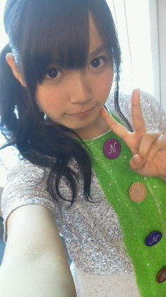

| 2012/07 29 Sun | ひめたん(* ゝω・*)ノ その187 |
名古屋わずー＼(^O^)／
ひめたんbicycle衣装初公開どーんきらきら♪

＊今日のセトリ＊
おいでシャンプー
ぐるぐるカーテン
狼に口笛を
走れ！bicycle
会いたかったかもしれない
はいーゆーことで、名古屋わず。
今回の名古屋CBCイベント選抜、普段はそう見れないでしょ？
素敵な組み合わせね(*^^*)
で、屋外だったのよ。暑かったー！
公開リハから見てた方、大丈夫でしたかな？
猛暑日ってやつね。ひめたんも今日は汗が永島聖羅だったてへぺろ(。・ω・。)
「滝汗いらりん」？「滝あせいらりん」？とも言うみたいよ＊
やーこんなにぽかぽかした日にライブするのは初めてですよー
会場の熱気とあっつい気温とで、もう最後はハイになって踊ってたのね。
まさに夏。野外ライブがいいお天気で本当によかった！
曇ってどんよりするよりか、
カラっとさくっと晴れてる今日みたいな日に踊るの気持ちいいね(*^^*)
て感じでひめたんは元気なんだけれども、みなさんは大丈夫でしたか？
絶対みなさんのが体感温度高いはずよー(´・_・`)
今日はゆっくり休んでぬ。冷えピタ貼って寝るのよ。
ひめたんらが頑張れたのは、みなさんのコールのおかげーよ！
明日の長崎も野外なので、えいえいおー＼(^O^)／☆
行くよーって方は熱中症対策ばっちりしてきてください約束っ
指きりげんまん
嘘ついたら針1000本...
いやいやひめたんがそんなことするわけ(^^)きらん
新幹線ー♪

 ひめたんジージャン似合うイメージあったけど、よく着てるの？
ひめたんジージャン似合うイメージあったけど、よく着てるの？
じーじゃんいっぱい持ってるよ！
でもさすがに暑くなってきたから着れないねー...
まあ秋に会おうじーじゃん(^^)！
ひめたんは男性の仕草で、キュンとするところある？
何だろねー
腕まくりとかしてたらもうそれだけで。
あと男の子の仕草に限ったことじゃないけど、頭ぽんぽんーてされるの好きよ(*^^*)
それからスポーツしてる人はみんなかっくいーと思ふ///
男性の髪型で、ツーブロックとアシメだったらどっちが好き？
ツーブロックとアシメ。
何だろな。ちょっと存じないのです。
Yahoo!で調べてみよーっとう♪
ひめた〜んの好きな男性の髪型、髪色は？
ひめたんは色白と色黒の男の子どっちがいい？
これは上の質問にもつながってくるけどね
その人に似合ってればどんな髪も肌も素敵だと思ふ(^O^)
ひとりひとり似合うのは違うと思うし。
だから一概にこれ！とは言いませぬー
ピンクだけの服って持ってるの？
持ってるよー☆
ただ、まっぴんくの服て、他の服との相性が難しいんよね。
ぱじゃまとか、めちゃぴんく(。・ω・。)
浴衣もレースのフリル？あれはオリジナル？それともひめたん付けたの？
あーれはもともとそんなデザインだったよ(ω)
ひめたんそーんな器用じゃないないー♪
 ひめたんの浴衣涼しそう。でも着ている本人は涼しくないんでしょう？
ひめたんの浴衣涼しそう。でも着ている本人は涼しくないんでしょう？
んーどうだろね。あの会場の中は涼しくていい感じだったけど
お外に出向いたらきっついかもしれないー...
あっつ。
手元にお名前ぺん・コピー用紙・パソコンがない故に
すぺこめ返しができないの(´；ω；｀)
ひめたんが帰ってくるの待っちょってちー♪
(*´・ω・*)ひめたん
コメント(167)
2012/07/29 00:42